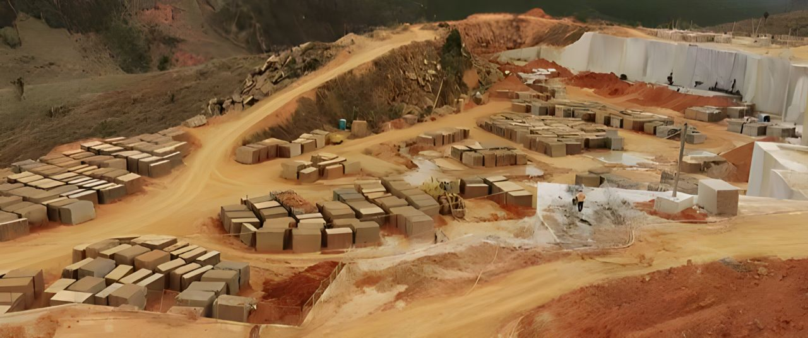

Quém Somos
A Arogran Granitos Ltda é uma empresa de exploração e extração e comercio de Granito, tanto a nível Nacional como Internacional, é conhecida no mercado a 20 anos, com os Melhores Profissionais Trabalhamos Arduamente para Atender Todas as Necessidades dos nossos Clientes. A visão da empresa é alinhar alta produtividade, logística eficiente e competitividade, tudo isto mantendo a excelente qualidade de seus produtos, solidificando a marca ARO em todo Brasil.
Granito Verde Ubatuba
A Descoberta Do Granito Verde de Ubatuba
Entre 1961 e 1962, ir para Ubatuba era uma questão de status, as praias mais frequentadas eram as do Perequê-Açu e Iperoig (ou Cruzeiro). Com a expansão da cidade e o crescimento da população, algumas fazendas começaram a virar loteamentos, como foi o caso da Praia das Toninhas, que era de dois proprietários. Uma parte pertencia a Luiz Silva e a outra metade, a Mário Manzetti, que contratou uma empresa de terraplanagem, para fazer a abertura da estrada e lotear o local. Com a necessidade de aterrar algumas partes das terras com cascalho, a empreiteira viu-se na obrigação de comunicar o contratante. Este, por sua vez, revelou que suas terras iam até o final do morro, onde grande parte da estrutura era puramente rochosa, que poderiam ser utilizadas para tal finalidade. Então foi aberta uma estrada de serviço, íngreme até o sopé da Serra do Mar, onde apenas tratores eram capazes de chegar. Para se certificar da qualidade do material, a empresa de terraplanagem enviou uma amostra ao IPT (Instituto Paulista de Tecnologia), para estudos. Para surpresa de todos, o IPT retornou dizendo que não haveria nenhum problema em utilizá-lo como cascalho, porém isso seria um desperdício, pois tratava-se do granito verde, antes encontrado somente em uma jazida na Costa do Marfim – África.
Fale Conosco